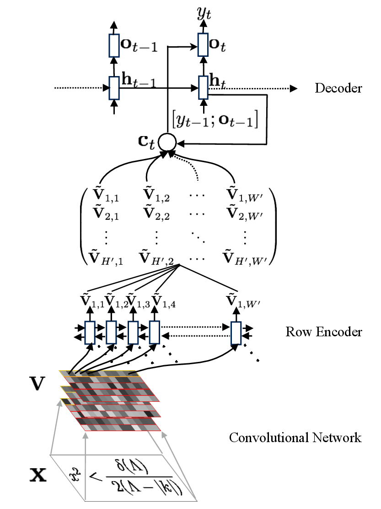

Original research visualizations
See how im2latex reads an equation
Explore the network, attention alignments, and qualitative results from Image-to-Markup Generation with Coarse-to-Fine Attention (ICML 2017).
These are the original recorded model outputs. Select an example, then hover over its generated LaTeX tokens to inspect the attention over the input image.

Loading the original attention examples…
Loading the original qualitative results…
The alignment examples load a large data file and may take a moment. On a narrow screen, scroll within the visualization to see the full expression.